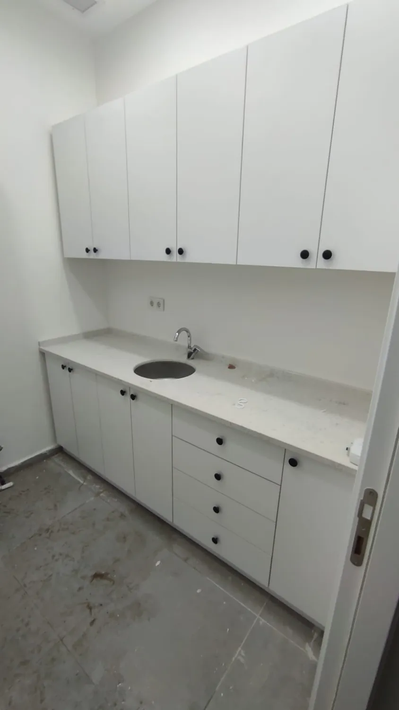
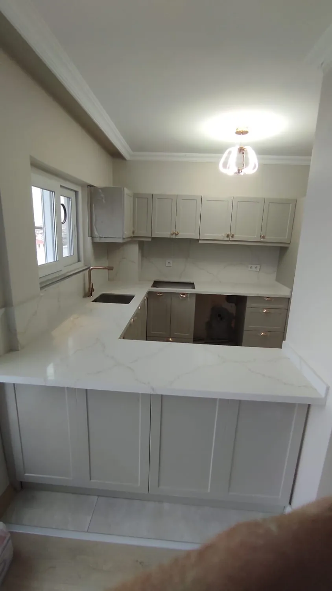

ASİLEREN MOBİLYA · İSTANBUL ANADOLU YAKASI
Mutfak Dolapları
Mutfak alanınıza uygun ölçüler, depolama ihtiyaçları ve tercih ettiğiniz tasarım doğrultusunda mutfak dolabı çözümleri.
Mutfak dolabı için ölçü ve tasarım planlaması
İhtiyaç duyulan ölçüler, malzeme tercihleri, kapak ve depolama düzeni gibi ayrıntılar projeye göre değerlendirilir. Uygun çözümü belirlemek için alanın ölçülerini ve beklentilerinizi paylaşabilirsiniz.
Hizmet bölgemiz
Kadıköy, Ataşehir, Ümraniye, Üsküdar, Maltepe, Kartal, Pendik, Tuzla, Beykoz ve İstanbul Anadolu Yakası'nın diğer ilçeleri.
Fiyat teklifi nasıl alınır?
WhatsApp üzerinden bulunduğunuz ilçeyi, yaklaşık ölçüleri ve istediğiniz modeli paylaşın. Varsa örnek görsel de gönderebilirsiniz.
WhatsApp'tan Teklif İste ↗Telefon: 0506 027 21 37
Uygulama fotoğrafları



